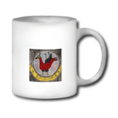

Friday, January the 27th, 2006
back to: title, date or indexes
The tentacles of Hooting Yard continue to writhe in a hideously Lovecraftian manner around the world. The latest instance of this is the appearance of pirated merchandise. I am extraordinarily pleased to note that readers can now obtain a very special mug from which to gulp down their Cuppagruel™.

The mug is emblazoned with the “Implausible” logo and is outrageously expensive. Having tracked down the ingrate behind this pathetic get-rich-quick scheme, I am assured that if it sells in sufficient quantities, I might receive a one-off payment of about thirty five pence. So I implore every single reader to go and buy one immediately! Visit Wombat Keeper Publications and follow the link to the online shop.